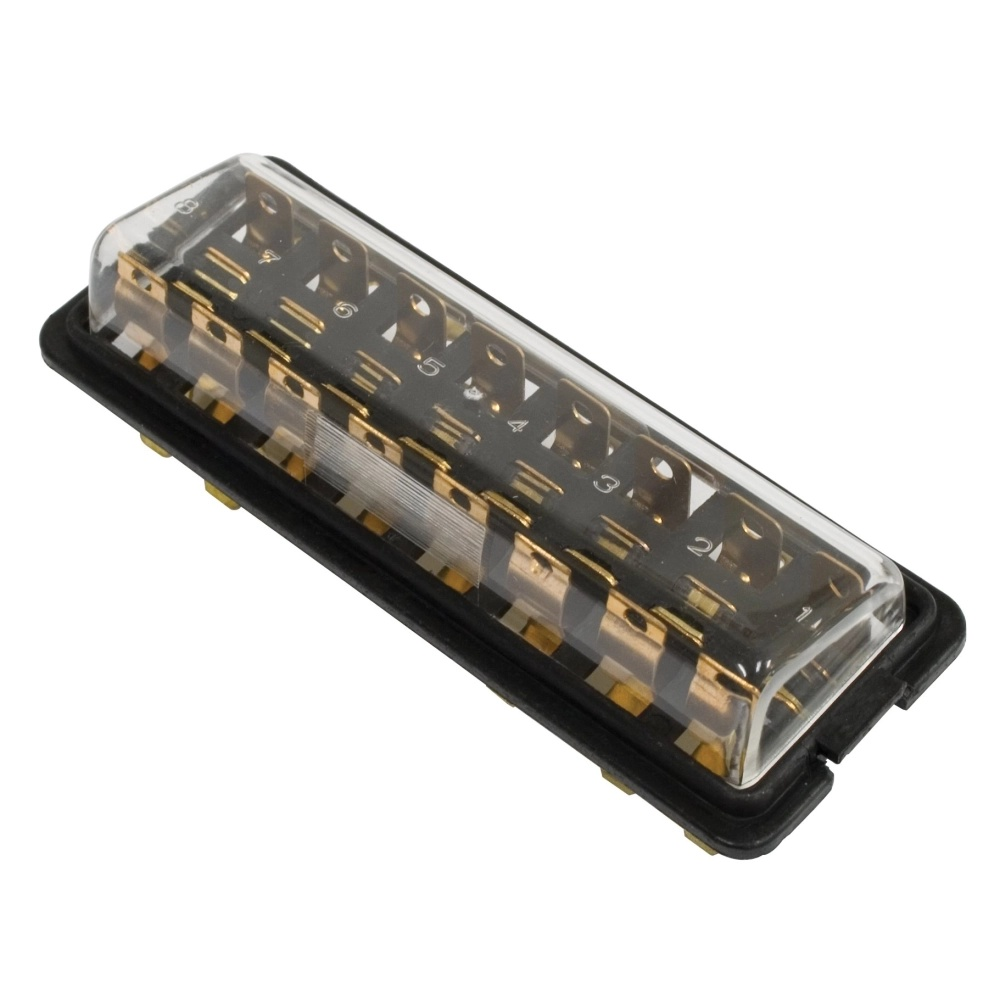

O quê
Massa limpa, foto da caixa e tensão parado. No Brasil, 12 V de fábrica = 1968. 12 V não significa alternador.
Cap.2 · F-P0-5 · ~5 min
Massa limpa, foto da caixa e tensão parado.
vídeo em elaboração · unpublished
Massa: still textual. Sem tipada inventada. Caixa e gerador — cite N0 abaixo.
Narrador: Oliver
Massa limpa, foto da caixa e tensão parado. No Brasil, 12 V de fábrica = 1968. 12 V não significa alternador.
Sem isso, a peça e o diagrama saem errados.



Pedir peça ou diagrama sem medir, sem foto da caixa e sem olhar o gerador.
F-P0-6 — chicote, atrito e evidência.